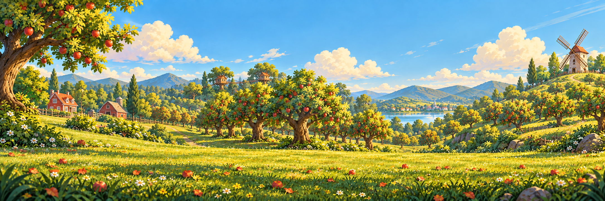
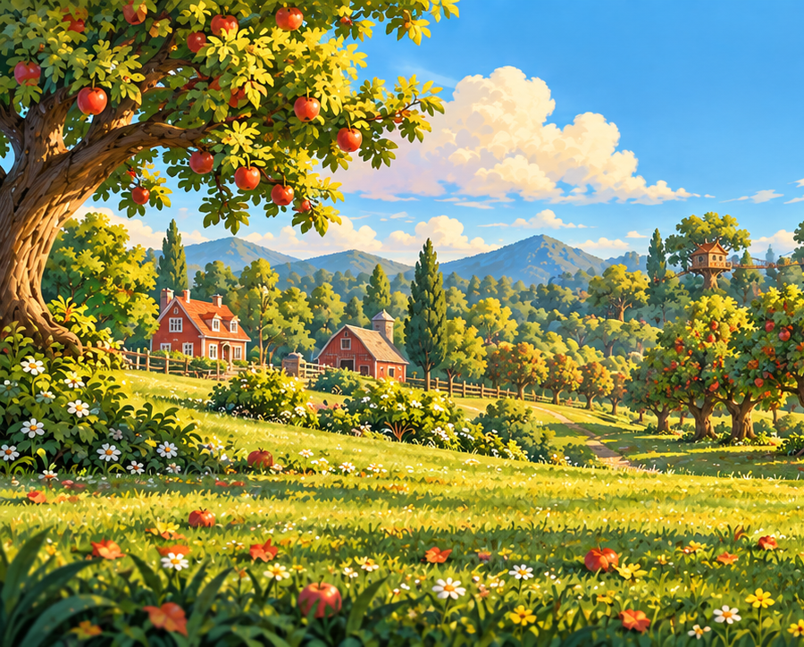
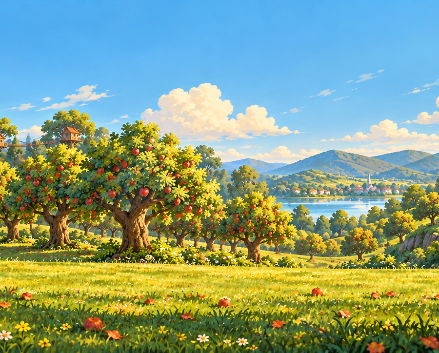
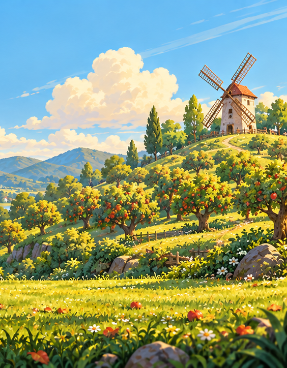
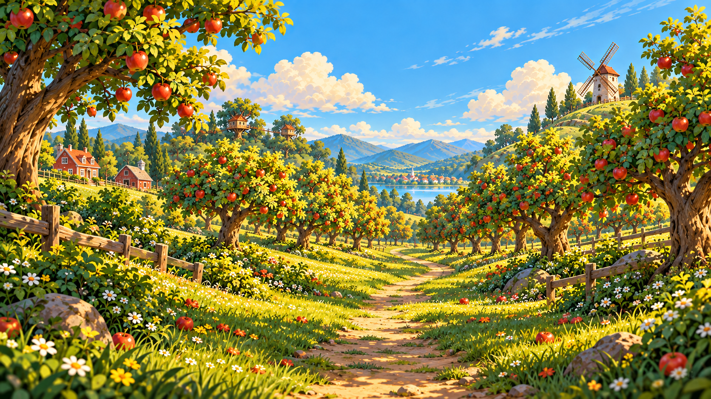
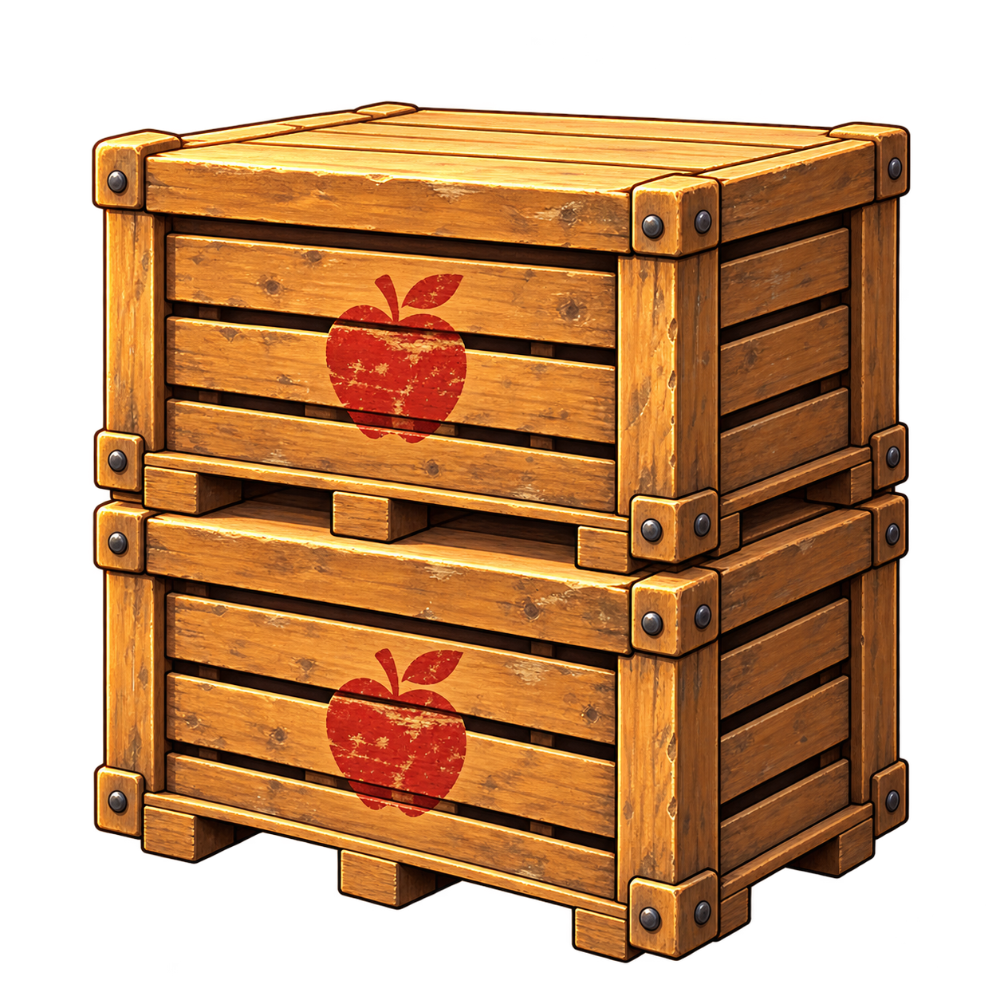
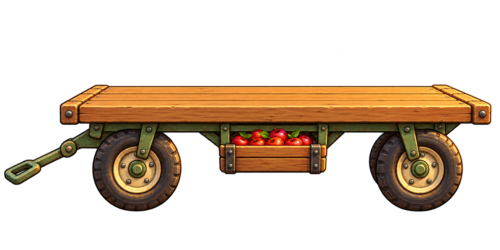
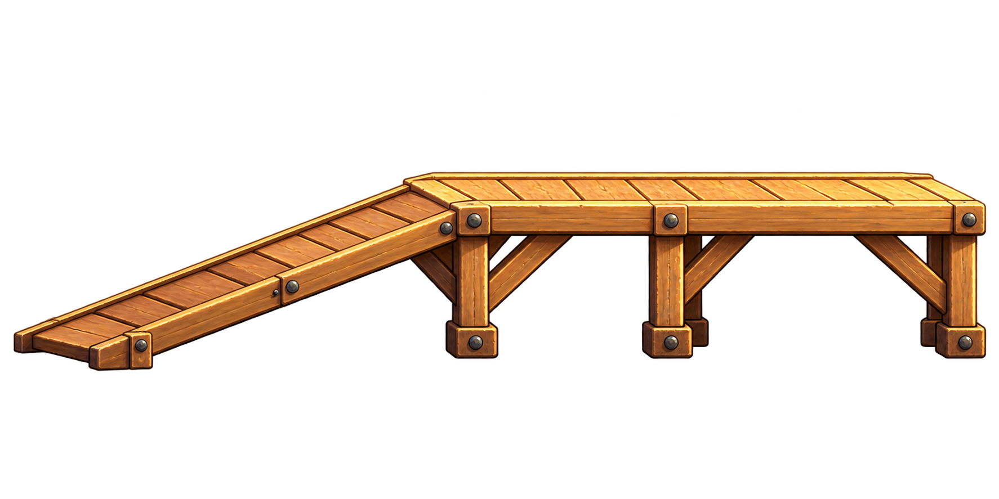

One orchard. Continuous scenery.
Generated as one continuous master, then cut into three lossless PNG tiles. Adjacent tiles share 96 identical pixels. Move the camera to compare the original with the assembled tiles.
Both overlaps match pixel for pixel. Reconstructing the full 2,172 × 724 panorama from these tiles reproduces every original pixel. These are sequential tiles for this finite level; place them at the coordinates in the manifest with their shared overlap.
The full panorama


TILE 0 · x = 0 · width = 900

TILE 1 · x = 804 · width = 900

TILE 2 · x = 1608 · width = 564
The owner's POV
Image Gen used the panorama as the location reference, preserving its red barns, apple trees, treehouses, sunlight, mountains and windmill for the Bitcoin flight shot.

Harvest equipment
Uniformly scaled bins, wheeled picking wagons and a cross-braced loading ramp replace the former tree platforms. Collision surfaces follow their painted tops; each loading yard is graded so supports meet the soil.

APPLE BINS

PICKING WAGON

LOADING RAMP AND PACKING DECK